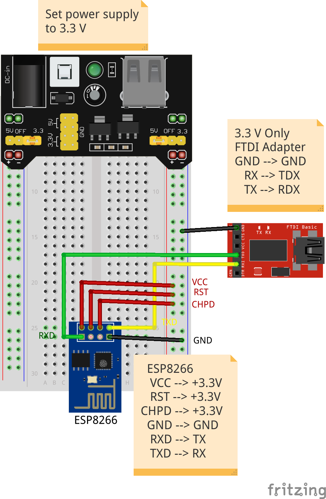
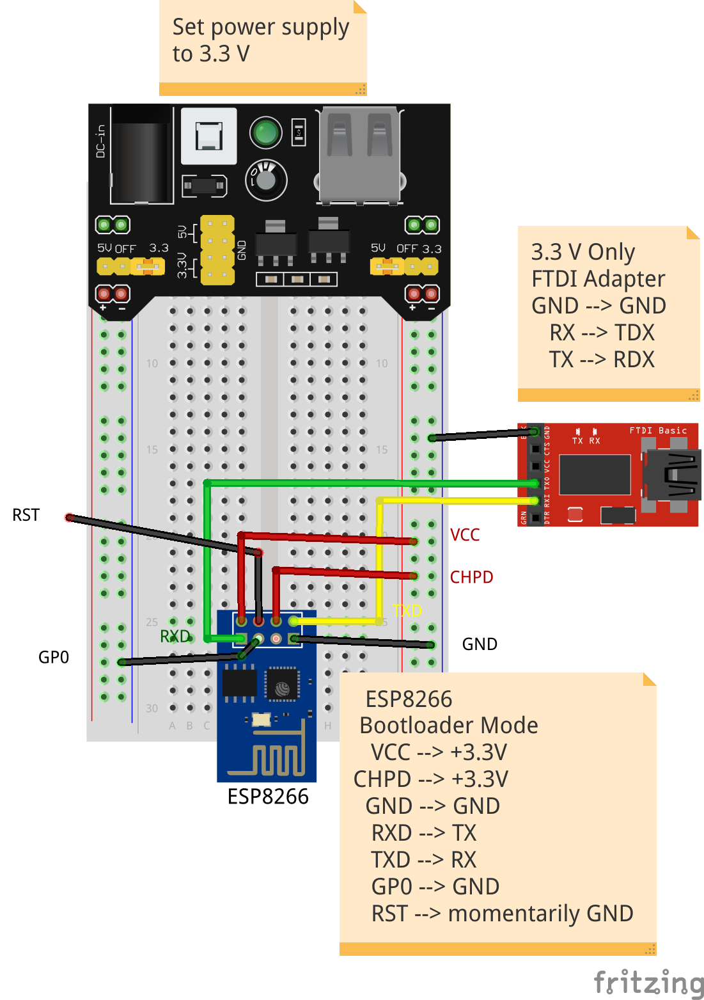
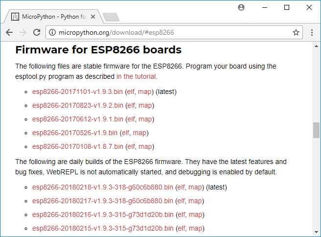
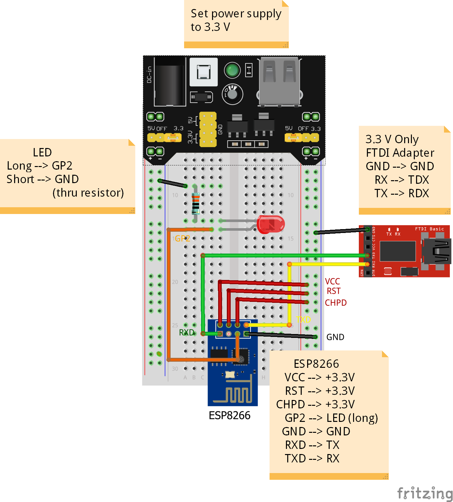

In this post we are going to upload Micropython on a cheap $3 ESP8266-01 board with only 1 MB of flash memory. It is pretty amazing that even these tiny, inexpensive boards can run Micropython. There are a couple tricks I learned along the way that I wanted to share.
Before we can use upload Micropython to our cheap little board, Python and esptool need to be installed on the computer. I also used a breadboard, an FTDI serial adapter and a breadboard power supply. A little breadboard adapter for the little ESP-01 was also super helpful. The breadboard adapter made it easy to break out all of the ESP-01 module's pins which are not breadboard friendly on their own.
Summary of Steps:
- Hook up ESP-01 in regular running mode (GP0,RST→3.3V) and test, turn off power
- Hook up ESP-01 in bootloader mode(GP0->>GND), turn on power, touch RST to ground, then unplug RST
- Use esptool to erase the ESP-01's flash memory
- Use esptool to upload firmware
- Test Micropython REPL in PuTTY
- Wire up LED, test in PuTTY
1. Hook up ESP-01 in regular running mode (GP0,RST→3.3V) and test
Start by hooking up the little ESP-01 board in regular running mode. When the ESP-01 is wired up in regular running mode, it can receive commands, run programs, blink LED's etc. This is the way the ESP-01 is usually wired up. Running mode is wired differently than bootloader mode (which we will use later).
Materials:
ESP-01 module - the black AI Tinker modules) ESP-01 breadboard adapter Breadboard power supply - wish these had micro usb, not big usb FTDI serial to microUSB adaptor - wish this could power ESP-01 on it's own. Make sure it is 3.3V capable Breadboard - various Jumper Wires - various. Better quality is worth it.

For regular running mode, pins from the ESP-01 need to be connected to:
ESP-01 Running Mode
| ESP-01 Pin | Connection |
|---|---|
| RST | 3.3 V |
| GP0 | 3.3 V |
| VC | 3.3 V |
| GND | GND - shared with FTDI adapter |
| TX | RX - on FTDI adapter |
| RX | TX - on FTDI adapter |
A couple things I learned along the way:
- Using a breadboard power supply works better than using power from the FTDI adapter. The ESP-01 draws a lot of power. The Sparkfun Beefy 3 FTDI adapter can power the ESP-01, but a regular FTDI adapter had trouble.
- The FTDI adapter only needs TX, RX and GND connected. Ensure the FTDI adapter is a 3.3 V adapter, not a 5 V adapter.
- The right angle ESP-01 breadboard breakouts are better than the parallel ESP-01 breadboard breakouts. The right angle made it easier to connect jumper wires to the breadboard.
- Putty doesn't seem to work to view AT commands. I needed to use the Arduino IDE serial monitor instead.
- To connect to the ESP-01, you need to know which COM Port the ESP-01 (thru the FTDI adapter) is connected to. The active COM ports can be viewed in the Windows Device Manager.
Once the ESP-01 is wired up in running mode, and connected to the computer, open the Arduino Serial monitor at 115200 Baud. Make sure the Port (COM Port) is set correctly. The following commands should produce output.
AT
AT + GMR
AT + RST
2. Hook up ESP-01 in bootloader mode(GP0 → GND), turn on power, touch RST to ground, then unplug RST
After confirming the ESP-01 can powered up, and AT commands can be sent over the Arduino Serial Monitor, it is time to put the ESP-01 in bootloader mode. When the ESP-01 is wired up in bootloader mode, firmware can be uploaded to it's flash memory. When the ESP-01 is wired in bootloader mode, it will not run regular commands, blink LED's or run scripts. The ESP-01 bootloader mode is only used when new firmware is uploaded to the board.
To wire the ESP-01 in bootloader mode:
- Connect GP0 → GND
- Power up the ESP-01
- Touch RST to ground momentarily, then unplug RST.

ESP-01 Bootloader Mode
| ESP-01 Pin | Connection |
|---|---|
| RST | after power, up touch momentarily to GND |
| GP0 | GND |
| VC | 3.3 V |
| GND | GND - shared with FTDI adapter |
| TX | RX - on FTDI adapter |
| RX | TX - on FTDI adapter |
3. Use esptool to erase the ESP-01's flash memory
With the ESP-01 in bootloader mode, we can upload firmware to the board. But before uploading new firmware, it is a good idea to erase the flash memory on the board first.
To erase the ESP-01's flash memory, connect the board to the computer through the FTDI breakout. Power up the board and momentarily touch the RST pin to ground to put the ESP-01 into bootloader mode. Ensure esptool is installed in the current virtual environment and run following command at a terminal of the Anaconda Prompt. Make sure to replace COM4 with the correct COM Port.
$ esptool --port COM4 erase_flash
4. Use esptool to upload firmware
Now that the flash memory of the ESP-01 is cleared, we can upload the Micropython firmware to the tiny cheap board.
Download the latest micropython firmware .bin file
Go to github and download the latest .bin firmware file. The .bin firmware file is the version of Micropython that will run on an ESP-01 board. I got the regular version of the ESP8266 firmware (the ESP8266 firmware version that runs on the Adafruit Feather Huzzah and NodeMCU boards) to run on the ESP-01. The version of little ESP-01 board I'm using is from AI Tinker. The little boards are black and have 1MB of flash memory. Some ESP-01 boards have 512 kB of memory (it seems these are usually blue) and others have 1MB of memory (usually black?).

Flash the firmware onto the ESP-01
To upload the firmware to the ESP-01 board, connect the board to the computer through the FTDI breakout. Again, power up the board and momentarily touch the RST pin to ground. This puts the ESP-01 into bootloader mode. Run the following command at a terminal. Ensure the firmware name corresponds to the firmware you downloaded and that the firware.bin file is in the current working directory. Note the --port also needs to be set correctly.
$ esptool --port COM4 --baud 115200 write_flash --flash_size=detect 0 esp8266-20171101-v1.9.3.bin
5. Test Micropython REPL in PuTTY
Next we will check the Micropython firmware we just upload to the ESP-01 with PuTTY. Disconnect the ESP-01 from power and wire it up in regular running mode (RST, GPO → 3.3 V).
ESP-01 Running Mode
| ESP-01 Pin | Connection |
|---|---|
| RST | 3.3 V |
| GP0 | 3.3 V |
| VC | 3.3 V |
| GND | GND - shared with FTDI adapter |
| TX | RX - on FTDI adapter |
| RX | TX - on FTDI adapter |
Open a PuTTY serial terminal session at 115200 baud and try the following commands. You may need to key in [ctrl-c] or [ctrl-d] to bring up the Micropython REPL.
>>> import sys
>>> sys.implementation
(name='micropython', version=(1, 9, 3))
>>> sys.platform
'esp8266'
6. Wire up an LED, test in PuTTY
Next, we'll see if we can get an LED to turn on and off using the ESP-01 and Micropython. Unplug the ESP-01 from the computer and power. Wire up an LED to GP2 thru a pull up resistor to ground.

Connect the ESP-01 to the computer and power it up. Open PuTTY and try to turn the LED on and off with the following commands:
>>> import machine
>>> pin = machine.Pin(2, machine.Pin.OUT)
>>> pin.value(1)
>>> pin.value(0)
Now let's see if we can blink the LED with a loop:
>>> for i in range(10):
... pin.value(1)
... time.sleep(1)
... pin.value(0)
... time.sleep(1)
...
The LED should blink on and off 10 times.
Summary:
It's pretty amazing that Micropython runs on little cheap ESP-01 boards. Although the ESP-01 price is low (a little over 3 dollars), there were a couple of pieces of hardware required to get the ESP-01 board to work. The extra hardware included a breadboard power supply and an FTDI adapter. If a project used many ESP-01 modules, or if size is a big factor, it might make sense to use the cheap little ESP-01 boards. But for my money, I would spend about 5 extra dollars (for a total of only a little over 8 dollars) and get one of the ESP8266 NodeMCU boards. These modules have a voltage regulator and FTDI included, plus you get way more GPIO pins to use as compared to the ESP-01 and 4MB of flash memory to boot. It is really cool though to get Micropython running on something so small and so cheap like the ESP-01 board.